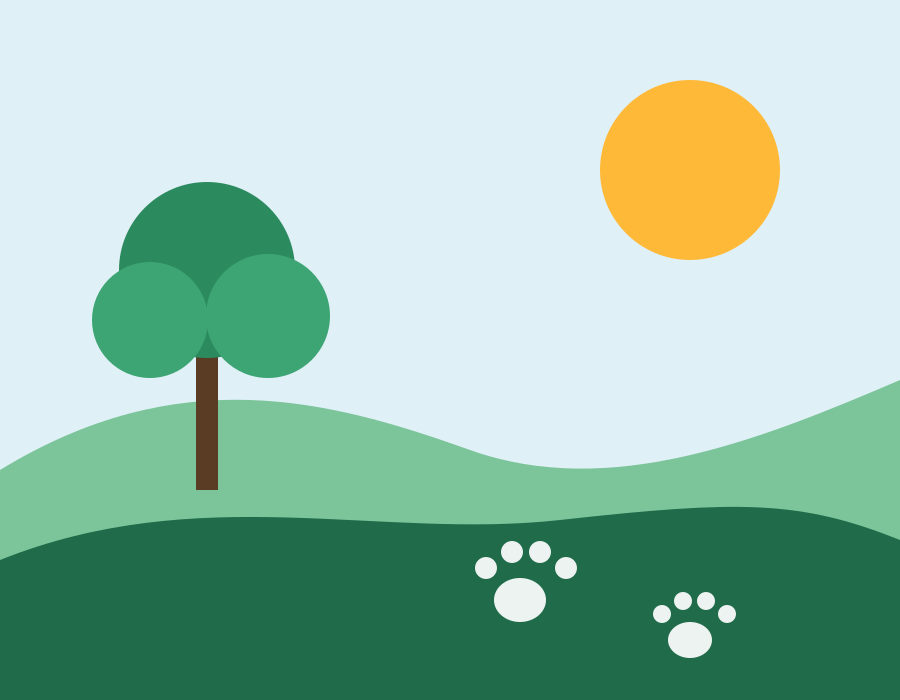
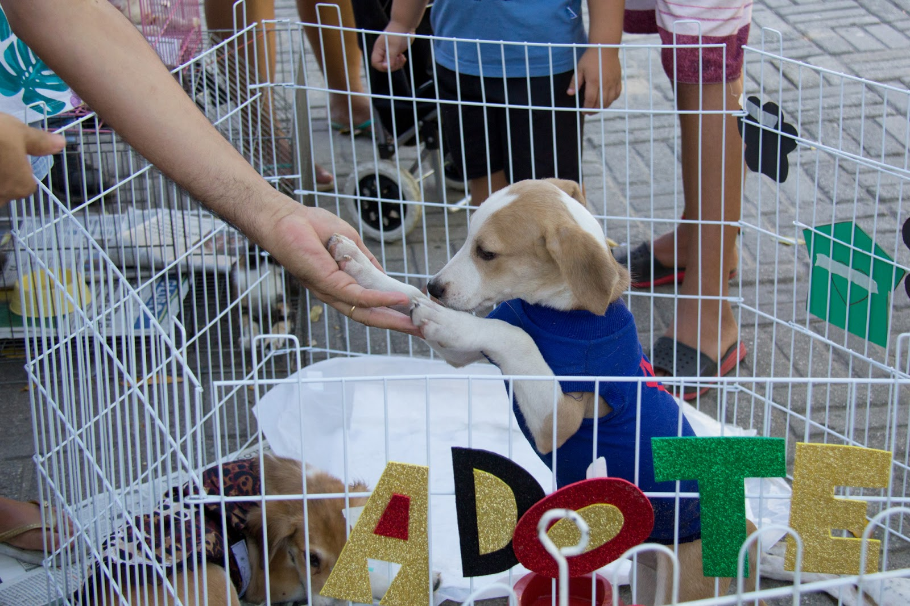
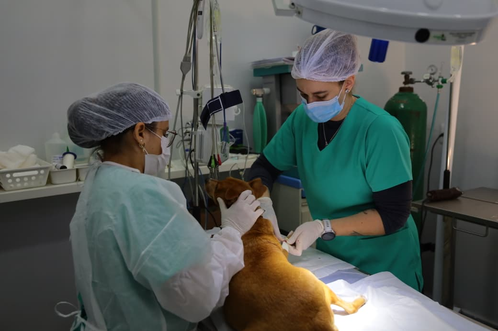

Nossa história
A ONG nasceu em 2022, criada por ativistas da causa animal e ambiental que, sozinhas e com poucos recursos, perceberam que juntas fariam mais. O nome reflete essa união de propósitos por um mundo mais justo para todos os seres vivos.
Desde 2022, a Aliança do Bem protege animais e o meio ambiente em Campinas, com resgate, castração, adoção e educação ambiental.
Quero ajudar Conheça os projetos
A ONG nasceu em 2022, criada por ativistas da causa animal e ambiental que, sozinhas e com poucos recursos, perceberam que juntas fariam mais. O nome reflete essa união de propósitos por um mundo mais justo para todos os seres vivos.
Promover a proteção animal e a preservação do meio ambiente, com amor, respeito e compromisso com a vida.
Construir um futuro mais justo e sustentável por meio de pequenas ações que, somadas, geram grandes transformações.
Iniciativas em andamento que reduzem o abandono e fortalecem a consciência ambiental.
Adoção responsável de cães e gatos resgatados do abandono, de maus-tratos ou de situações de risco.
Castração ética e sustentável para conter o abandono e a superpopulação de animais.
Bebedouros e comedouros sustentáveis para pets e animais em situação de rua.
Cupons fiscais descartados viram papel plantável, unindo reciclagem, educação ambiental e cultivo consciente.
Eventos, campanhas e ações de preservação. Substitua as imagens-modelo da pasta images por fotos reais da ONG.



Contribua por PIX ou transferência, ou doe suas notas fiscais pelo programa Nota Fiscal Paulista.
Ver formas de doarVagas em resgate de animais, lar temporário e comunicação e captação (remota).
Quero ser voluntárioAssocie a marca da sua empresa à causa animal e ambiental no programa Empresa Amiga.
Quero ser parceiro